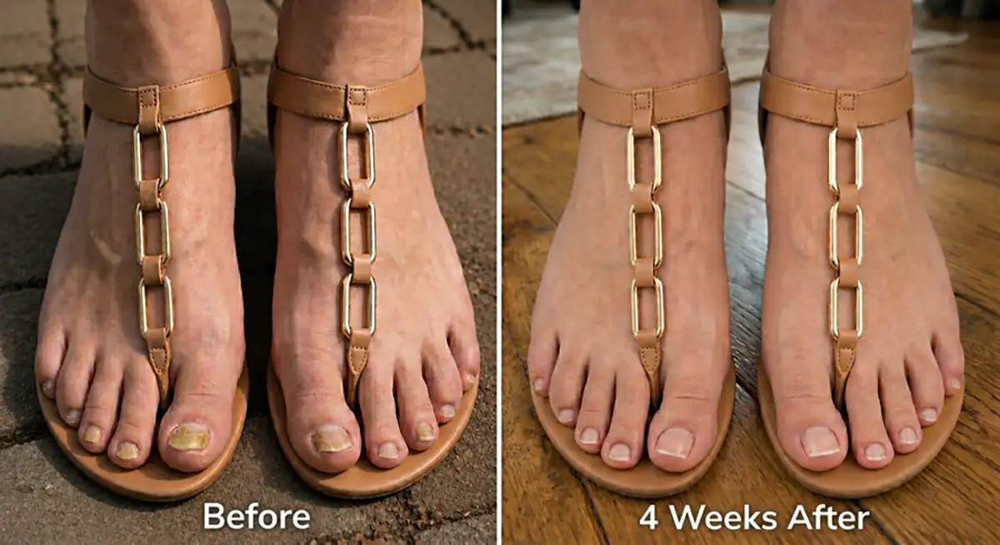
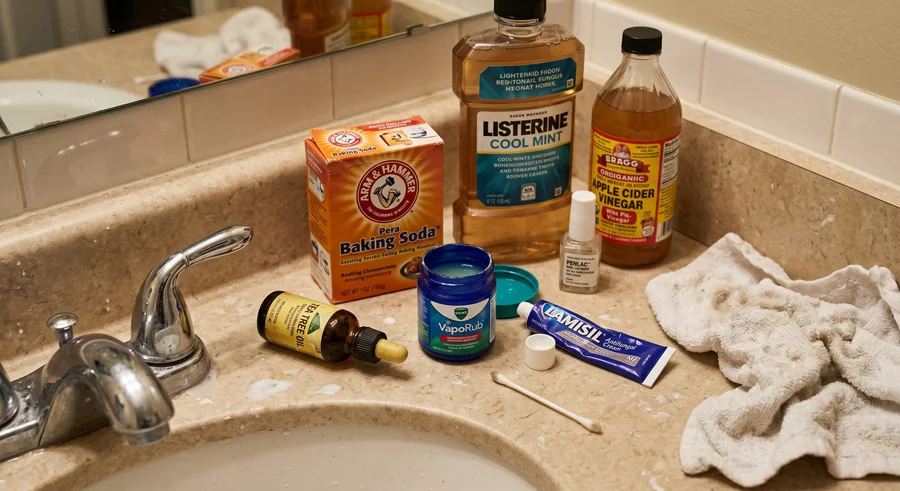
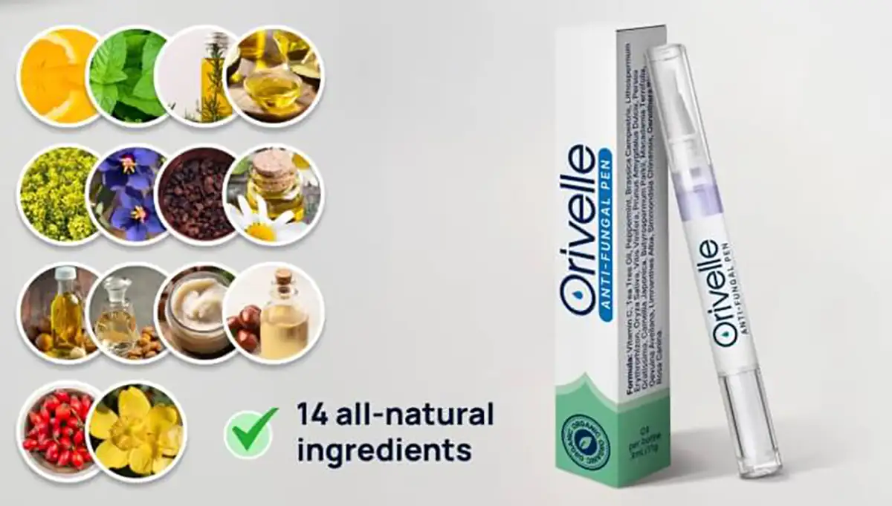
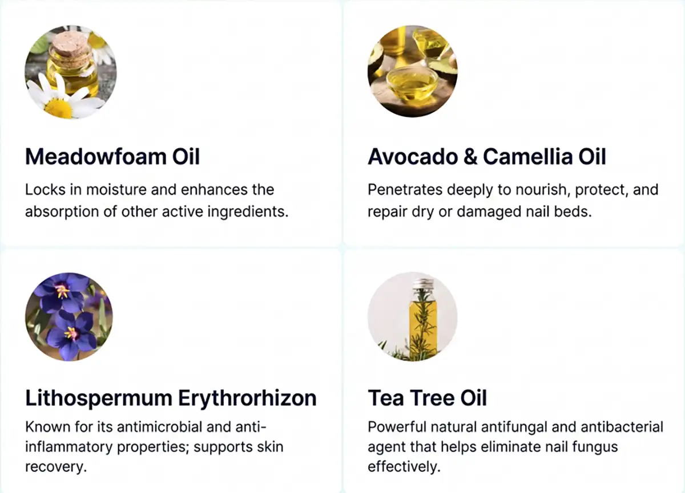
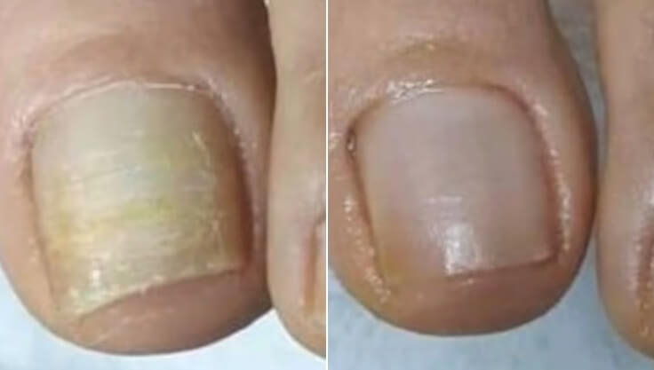
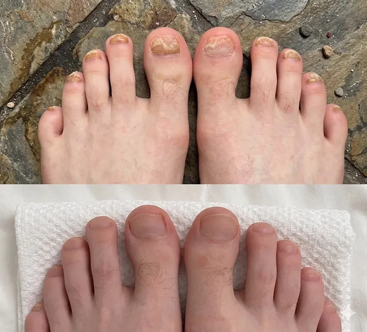
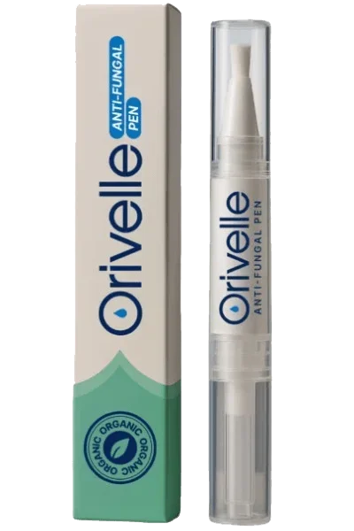
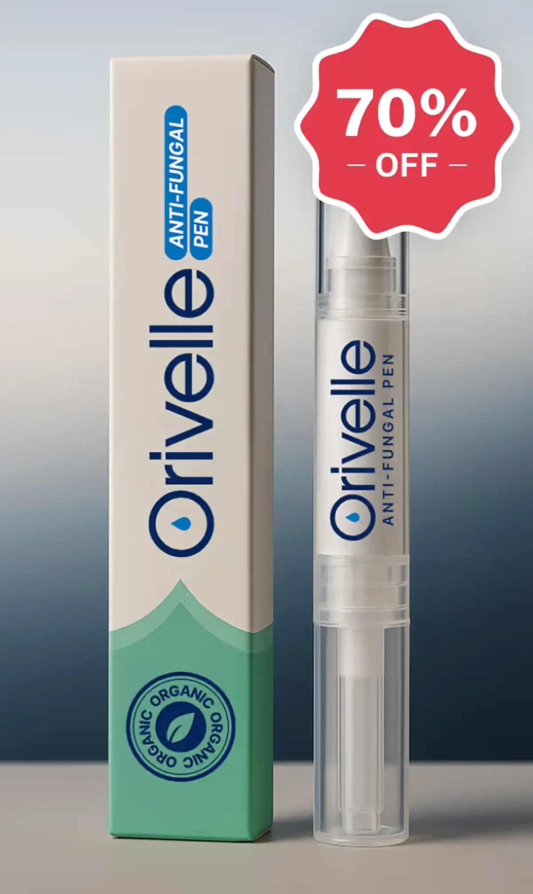

My GP Said It'd Take Up To A Year To Treat My Relentless Toenail Fungus. I Fixed It In 4 Weeks With THIS
I tried 9 different "cures" over 5 years, and the fungus ALWAYS came back. I've now been fungus-free for over 18 months – and the fix was so embarrassingly simple! I'll show you exactly what I did.

I'm Kayla, I'm 37, and for 5 years I had embarrassing toenail fungus I couldn't beat.
I believe I picked it up from a pedicure at a nail salon. I ignored it for a couple of years thinking it would clear up on its own…
But it didn't.
Instead, it spread to the next toe, then the next, until I couldn't pretend it wasn't happening anymore. I was horrified.
It felt awful to look down at my own feet – it made me feel dirty.
My whole life started to revolve around hiding my ugly feet. At the beach, I'd bury them in the sand so nobody could see. At home, I wore socks year-round…
I'd skip pedicures with friends and make up excuses. And I picked every outfit around what shoes would cover my toes – never the cute open-toe sandals I actually wanted to wear.
Fixing my toenails became my obsession, so I spent the next 5 years trying EVERYTHING.
And if you've ever Googled "how to cure toenail fungus," you know what I'm talking about…
There are hundreds of "solutions" out there. Home remedies. Pills. 20-step morning routines you're supposed to follow before putting on your shoes.
It's a full-time job just trying to keep up!
And here's the thing about nail fungus – you get trapped in this awful cycle. You hear about a "new exciting solution". You try it. It works for a few weeks. Then the fungus comes back.
Every. Single. Time.
It's soul-crushing. After a while, you start to believe this thing is just going to live with you forever.
But the good news is… it doesn't have to.
There IS one thing that finally worked for me – it cleared my nails in weeks, not years, and I did it in just a few seconds every morning from home.
So I'm going to walk you through every single thing I tried, what failed and why, so you can skip the 5 years of misleading advice and go straight to the one thing that can actually fix your toenail fungus quickly – and for good.

The Temporary Fixes That Will Let Your Fungus Come Back (Don't Waste Your Time On These)
So I went to my GP, and she said it would take around one year to cure my fungus.
The first thing she prescribed was Terbinafine – and it actually worked. The fungus visibly cleared, my nails started looking almost normal again, and I got so excited thinking that was the end of it.
Oh boy, how wrong I was!
Less than 2 weeks after I finished the pills, the yellow stripes came creeping back across my big toe. I sat on the edge of the bath and cried.
That's when I started trying everything else…
Tea tree oil – Every Reddit thread, every Mumsnet post, every Google result swore by it. I diluted it with coconut oil like the forums said, dabbed it on twice a day with a cotton bud, stayed religious about it for 4 months. My nails did look a little better. Then I went away for a long weekend, skipped it for 3 days, and by the time I got home the fungus had come back with a vengeance.
Vicks VapoRub. It softened my nails and I genuinely thought it was working. Then I looked down one morning and noticed the fungus had spread to a third toe.
Apple cider vinegar soaks. 20 minutes a night, every night, for 6 weeks. My bathroom smelled like a chip shop. Nails looked slightly better at first, then plateaued, then got worse.
Pharmacy antifungal creams – Canesten, Daktarin, Lamisil cream – used it religiously every night. The label said "results in 4 weeks." For me, the results were: absolutely nothing.
Listerine soaks – Another internet "miracle." 2 months of this. All I got out of it was blue feet and a bathroom that smelled like a dentist's office.
Baking soda paste. Three weeks in I had irritated skin, no improvement, and I was waking up with baking soda in my sheets.
Laser treatment at a private clinic in town. £280 per session. I spent over £1,100. The fungus cleared by about 60% after the full course. Six months later, I was back to where I started.
Prescription nail lacquer you paint it on every day for up to 48 weeks. I lasted 8 months. The fungus retreated for about 6 weeks somewhere in the middle. Then it came back.
Every time something failed, I'd hear the same thing – "give it more time, be more consistent, you have to stick with it."
But I couldn't imagine spending the rest of my life taking a pill that made me sick, or rubbing things on my toenails every single day.
There had to be something better. Something that actually worked, fast, and kept the fungus from coming back.
And I found it.
During my search for a real solution, I was referred to a holistic skin expert in London – Dr Kristina Foster – who'd had tremendous success treating stubborn skin and nail fungus cases.
Two weeks later, I was in her office.
She started by explaining something I'd never heard before: fungus is so hard to kill because it doesn't live on your nail – it lives between the nail and the nail bed.
Which means every topical treatment I'd tried – the tea tree oil, the Vicks, the Lamisil, the apple cider vinegar – had to penetrate through thick keratin – the rock-hard protein layer your nail is made of – to even reach the fungus.
And the oral drugs have to travel all the way through your bloodstream and into the tiny vessels at the base of your nail before they can even start killing it.
Both are incredibly difficult to pull off. Which is exactly why these treatments seem to work at first – they kill the weak surface fungus you can see. But the resistant strains buried deep in the nail bed survive, multiply, and come back stronger than before.
And even when one of these treatments does work, it's almost impossible to do perfectly. The standard protocols require months – sometimes years – of perfect discipline. Miss a few days, and you're back to square one.
For the first time in 5 years, every single failure suddenly made sense.
"So what you actually need," Dr Foster said, "are two things working together."
- First – a delivery system that can actually penetrate the nail plate. That means oil-based, not water-based. Oil is one of the only substances that passes through the keratin barrier and reaches the nail bed underneath.
- And second – the right antifungal compounds inside that oil. The exact combination of botanicals that work together to:
- Penetrate through even the thickest nails
- Combat fungus at the root (not just surface)
- Help restore your nail's naturalised defence system
- Help prevent reinfection permanently
She opened a drawer in her desk and handed me the solution that would fix 5 years of struggle in just 4 weeks.

Meet Orivelle: The Plant-Powered Nail Pen That Eliminates Toenail Fungus For Good
Orivelle contains 14 powerful botanicals – each one selected for a specific role in killing fungus, restoring damaged nails, and protecting the skin around them.

Plus, Vitamin C, Peppermint, Rapeseed Oil, Grape Seed Oil, Sweet Almond Oil, Shea Butter, Chilean Hazelnut Oil, Jojoba Oil, Evening Primrose Oil, and Rosehip Oil – all of these powerful compounds work together to rebuild brittle, yellow, cracked nails into healthy, beautiful ones.
Orivelle isn't just killing the fungus. It's restoring everything the fungus destroyed.
What makes Orivelle different:
Creams: Sit on surface, can't penetrate nail
Pills: Attack your liver, only work 17% of the time
Home remedies: Too weak, inconsistent results
Orivelle: Penetrates entire nail, combats fungus at the root and helps prevent its return
"I Can Wear Sandals Again!" – Real Stories From Real People
Margaret K.
Verified Buyer
“I'm 67 and had nail fungus for 12 years. TWELVE YEARS! Tried everything including those horrible pills that made me sick. My daughter found Orivelle online and bought it for me. Within 2 weeks, my nails almost stopped crumbling. By week 4, I could see pink, healthy nail growing from the base. Now at 3 months, my nails are almost clear for the first time in years! I just booked a pedicure – something I haven't done in over a decade. Thank you!”

BEFORE – AFTER (8 WEEKS) · *Individual results may vary. Margaret K., verified customer
Linda M.
Verified Buyer
"8 Years Of Toenail Fungus Gone After 6 Weeks Of Treatment"
I'm SO happy!! By week 6 my toenails looked clean and normal again. I went out and bought 3 new pairs of sandals last weekend.

Mark D.
Verified Buyer
"Success With Orivelle In Just 2 Months!!!"
The nails are growing in pink and normal at the base, no more yellow, no more thickness. I keep checking it because I can't believe it's actually gone. Couldn't recommend this enough.

Top UK Podiatrists Are Quietly Recommending This to Patients
“I've been a podiatrist for 18 years. When patients started showing me their Orivelle results, I was skeptical. But the improvement was undeniable. I now recommend it to patients who can't take oral medications or have recurring infections. The success rate is remarkable.” – Dr James T., DPM, London
In an independent study of 500 users:
The Simple 60-Second Ritual That Transforms Your Nails
Using Orivelle is easier than brushing your teeth:
- Step 1: Clean and dry your nails
- Step 2: Apply Orivelle with the precision brush (like nail polish)
- Step 3: Let dry for 60 seconds
Do this twice daily. Most people see results in 7–14 days.
No filing. No soaking. No mess.
Compare the Cost: Orivelle vs. Traditional Treatments
Laser Treatment: £500–1,500 (often not covered by insurance)
Prescription Pills: £400+ for 3-month supply (plus liver tests)
Podiatrist Visits: £150+ per visit (multiple visits needed)
Orivelle Pen: less than £19.99 (lasts 30+ days)
Plus, Orivelle comes with a 30-day money-back guarantee. If you don't see improvement, get a full refund. No questions asked.
Margaret K.
Verified Buyer
“I\'m diabetic and my doctor said I couldn\'t take the antifungal pills. Been fighting this fungus for 5 years with creams that never worked. Orivelle helped clear my nails in 6 weeks! My wife ordered 3 more pens so we never run out.”
Just for the visitors of our site, Orivelle will be sold at a discount! Hit the "SPIN" button and win a discount! Good luck!

Check Availability & Apply Discount →LIMITED Discounted Supply AVAILABLE as of:
Book your EXCLUSIVE OFFER with a 70% discount!
ATTENTION: Beware of Fake Orivelle Products on Amazon
Due to its popularity, counterfeit versions of Orivelle have appeared online. These fakes don't contain the proper botanical concentrations and won't work.
Only buy from the official website to ensure you get the authentic formula with the 30-day guarantee.
Due to viral social media exposure, Orivelle is selling out fast.
Low stock remaining at discount price.
Next shipment arrives in 3–4 weeks.
Exclusively made for every age! Choose your age group and find the best solution for you!
For ages 60+
Click here for a70% discount!
For ages 40–60
Click here for a70% discount!
For ages 20–40
Click here for a70% discount!
Special Offer Almost Over: Save Up to 70%

Save up to 70% today
As part of their online awareness campaign, Orivelle is offering our British readers an exclusive discount:
- 1 Pen → Save 50%
- 3 Pen Bundle → Save 60% ← BEST VALUE
- 6 Pen Bundle → Save 70% (less than £10 per pen!)
All orders include:
- FREE Shipping (arrives in 2–3 days)
- 30-Day Money-Back Guarantee
- Nail Care Guide: "Clear Nails in 30 Days"
Linda S.
Verified Buyer
“Don\'t think twice! I wasted YEARS and HUNDREDS of pounds on treatments that didn\'t work. Orivelle helped clear my nails in 8 weeks. I\'m 72 and wearing open-toed shoes for the first time since my 50s!”
Patricia Williams
2 hours ago
Just ordered mine! My sister has been using this for a month and her nails look amazing. Can't wait to try it!
Michael Chen
5 hours ago
Is this safe for seniors? My mum is 78 and has been dealing with this for years.
Admin Reply: Yes, Orivelle is safe for all ages. It's all-natural with no harsh chemicals. Many customers in their 70s and 80s use it successfully!
Susan Thompson
Yesterday
UPDATE: Been using for 6 weeks now. The difference is incredible! Why didn't I find this sooner??? Just ordered 3 more for my husband.
David Rodriguez
2 days ago
The discount still works! Just got 3 bottles for less than the price of my last prescription. Thanks for sharing this!
Barbara Lee
3 days ago
How long does shipping take? Want to start treatment ASAP.
Admin Reply: Orders ship same day and arrive in 2-3 business days with free express shipping!
James Wilson
3 days ago
I'm a nurse and was skeptical but the science makes sense. After 4 weeks my big toenail is almost completely clear. Ordering more!